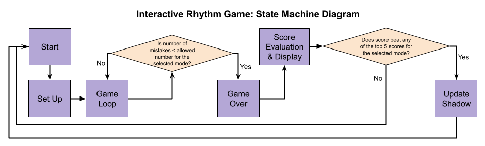
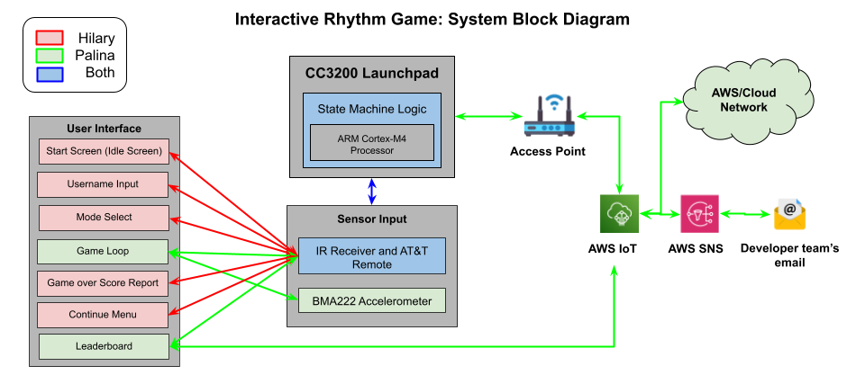

EEC 172 Final Project - Section A02
Our final project is an interactive rhythm game that combines button-pressing mechanics of Guitar Hero with the motion-based gameplay of Beat Saber. This game is intended to challenge players to simultaneously press the correct button (0-9) on the AT&T remote keypad while tilting the CC3200 Launchpad in the correct direction (Up/Down/Left/Right), based on the visual cues of the OLED display. To succeed at this game, the player must execute both actions correctly within a target region, which increases their score. There is a cloud-connected leaderboard where the microcontroller updates the AWS IoT device shadow whenever a player’s score is in the top 5. Furthermore, the development team (us) receives an immediate email alert with the new top score and the updated leaderboard via Amazon SNS. Additionally, the player can view the leaderboard; behind the scenes, the microcontroller requests the information from the shadow and displays it on OLED for the user.

The Interactive Rhythm Game's State Machine displays our major states and transitions. The game is idle until the user wakes it up. Then, they must enter a nickname and select the mode from easy, medium, and hard. Afterwars, they're taken to game loop, where they score points based on correct inputs or increase the number of mistakes otherwise. Once the number of mistakes is exceeded, the user reaches the game over stage where they see their score. At the same time, their score gets compared against the leaderboard, which gets updated accordingly.

Sensor input is the main driving factor, as it is linked to all parts of the user interface and gameplay. The IR receiver communicates with the CC3200 Launchpad within all stages of the game, with button signals acting to interact with the user interface and play the game. The BMA222 accelerometer only interacts with the microcontroller during gameplay when button number and tilt direction must be correct to earn points. Lastly, the microcontroller connects to AWS for updating the leaderboard and sending a notification through email whenever a new high score is registered to the leaderboard.
The user interface implements many different helper functions that interact with the OLED through SPI protocol and functions specified by Adafruit. These functions create a start screen, username input screen, mode selection screen, game loop, gave over score report, continue menu, and leaderboard. The start screen is simply an idle screen that prompts the user to press the [MUTE] button on the AT&T remote to start the game. This leads to the username input screen, which acts as a login interface, asking for a username. Then, the mode selection screen appears, showcasing the three difficulty levels and an option to view the leaderboard. Upon selecting a difficulty level, the OLED display then shows three different game play screens differing between the different difficulties. As difficulty increases, the game speed increases, target area where the action of pressing the button on the remote and tilting the microcontroller decreases, and number of allowed mistakes decreases. Button presses and microcontroller tilt are represented by circles that descend from the top of the OLED to the bottom. A streak count is used to provide a score multiplier, where every 10 streak rewards the player with 50 additional points. Upon making 3, 2, or 1 mistakes, the game loop finishes and the score and maximum streak is displayed. This then leads to an interface where the user can replay, choose a new difficulty level, view the leaderboard, or exit the game. Exiting the game leads back to the start screen. The leaderboard interface allows the user to cycle through the leaderboards for difficulties offered by the game. All interaction with the user interface on the OLED is done through button presses on the remote.
Our implementation for capturing and decoding IR signals is borrowed from our Lab 3 code. In this final project, we use the same GPIO_Handler() function, which is the interrupt handler function whenever the PIN 50 is triggered on a falling edge. The signal is captured and the pulse widths are stored in a buffer array. Once a Stop signal is captured, the buffer becomes ready to decode. All stages of the game use the buffer in a similar way: when it is ready, a decode_pulse() function is called, which iterates through the pulses and modifies a uint16 value representing the key. Then, this decoded value is compared across our target set in ProcessChar() and if there is a match, a non-NULL pointer to a char array is returned. To implement accelerometer data decoding, we referred to the code from Lab 2. I2C communication protocol is necessary to communicate with the on-board accelerometer we are using. In brief, ProcessReadRegCommand() is an I2C register read helper function. First, it parses a command string that contains a device address, register offset and read length. Then, it performs the corresponding I2C write to register and read from register operations to retrieve the single byte of sensor data. The command string is how we request to read specifically y-axis and x-axis data. This function is utilized in the general getAccelerometerDirection() function. There, we specify the exact commands to read x- and y-axis registers from the accelerometer, then we scale the values to reduce sensitivity, and finally, we compare these values to determine the dominant axis of the title. Whichever axis shows greater tilt “wins”. There is also a threshold check to figure out the four directions (Up, Down, Left, Right) and return the character specifying the direction.
To implement POST and GET for our final project, we referred to the code we had completed in Lab 4. Both http_post() and http_get() establish a TLS connection to AWS IoT to sync the leaderboard data. The http_post() function combines the current game state and the previously received shadow information, including top 5 scores and name for each mode, into a JSON message, then, it sends it as a HTTP POST request. The http_get() functions sends a HTTP GET request to retrieve the device shadow, then it uses a helper function to parse the response and repopulate the local leaderboard arrays. Both functions build the raw HTTP request strings, similarly to Lab 4, send them over a secure socket, and afterwards handle the received response before closing the TLS connection. The previously mentioned helper function, parse_shadow_response(), goes through the HTTP response http_get receives in order to extract the leaderboard information. First, we want to verify that “state” and “desired” fields exist in this response for a quick verification that the full shadow was received. Second, for each difficulty level the function sequentially finds the scores and names arrays, then it extracts the integers and strings. To prevent undefined behavior with local storage arrays, they are initialized to zero at the start. With the combination of these three functions, we implemented our real-time updated leaderboard that the user gets to view when interacting with the game and also what the developing team can review through their SNS email notification.
Some challenges involved with the user interface involved drawing it and ensuring all lines were in the correct position. This involved trial and error to get correct. Another challenge encountered was determining when to show each screen and prevent button presses from interacting with certain screens that are not supposed to be currently interacted with nor displayed. To solve this problem, the different screens that would be displayed needed to have a Boolean variable assigned to them, allowing for only one screen to be displayed and interacted with at a time. This required the variable values to be dependent on each other, once one was assigned to be true, another would need to be assigned to be false. Conditional statements and control flow were utilized for the screens to be displayed on the OLED as expected.
One challenge we encountered when implementing our game’s hit detection logic involved IR signal detection. Initially, our loop followed these high-level steps: set up the random target, update its y-location with the mode’s speed while the y-location has not reached the bottom of the OLED display, and on every iteration check if an IR signal has been detected. For debugging purposes, we set up some print statements that helped us understand what direction and what key got captured. What we noticed is that the button press and the direction were getting captured whenever any key was pressed, but the decoding of the pressed key was always incorrect (the buffer was populated with zeroes). It was very confusing since at any other stage of the game, the print statements were outputting correct IR signals. When reviewing our code from previous labs, we realized that we should try adding a function call to MAP_UtilsDelay() in the game loop, to let the key press correctly update the buffer. For some reason, this function didn’t eliminate the issue entirely, so we tried copying over and using the delay() function from oled_test.c (Lab 3). That function did help us eliminate the issue and our IR signal decoding inside of the game loop was working as intended.
When we were working on the implementation of the leaderboard page, we ran into an issue with parsing the JSON message, which represented the device shadow. The issue was that the names in a non-full leaderboard weren’t getting correctly parsed in our initial implementation, which made the updated shadow contain inaccurate information whenever the player beat a top score. Through testing we found that our parsing logic didn’t correctly grab strings from JSON. For context, strings in JSON must be surrounded by quotes (“”) and we accidentally kept double counting the end quote, which messed up how we parsed the strings when the leaderboard is not full. Once we corrected that, we got the expected behavior and our GET and POST correctly grabbed and updated the information in AWS IoT device shadow.
To further enhance this project, we came up with a couple of ideas for additional features:
| Component | Quantity | Cost | Source |
|---|---|---|---|
| CC3200 Launch Pad Board | 2 | 2 x $66.00 | EEC 172 Lab Materials |
| IR Receiver (Vishay TSOP311xx/313xx/315xx) | 2 | 2 x ~$1.50 | EEC 172 Lab Materials |
| AT&T S10-S3 Remote | 2 | 2 x ~$25 | EEC 172 Lab Materials |
| Adafruit OLED Breakout Board - 16-bit Color 1.5" | 2 | 2 x $45.95 | EEC 172 Lab Materials |
| BMA222 Digital, triaxial acceleration sensor | 2 | N/A | Onboard the TI CC3200 Launch Pad board |
| AWS Service | 2 accounts | 6 month free subscription | aws.amazon.com |
| Total | $0.00 | All costs are covered because our project uses only the supplied lab materials |
*The above costs are approximate and may vary